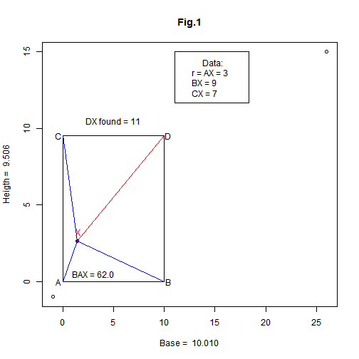

Given distances AX, BX and CX, is the 4th distance DX determined?
- Answer: Yes, with Pythagoras' help.
For instance:
Let BX = 9, CX = 7, AX = 3
\(DX = \sqrt{BX^2+CX^2-AX^2}\)
# Running the corresponding R code:
DX <- sqrt(BX^2+CX^2-AX^2)
cat(sprintf('DX = %3.1f',DX))
## DX = 11.0